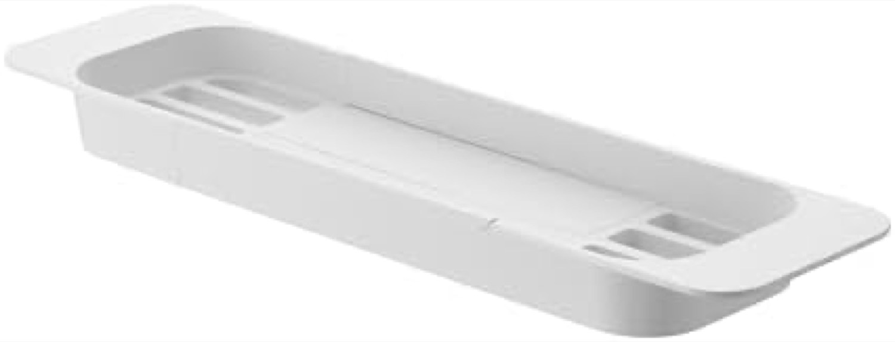
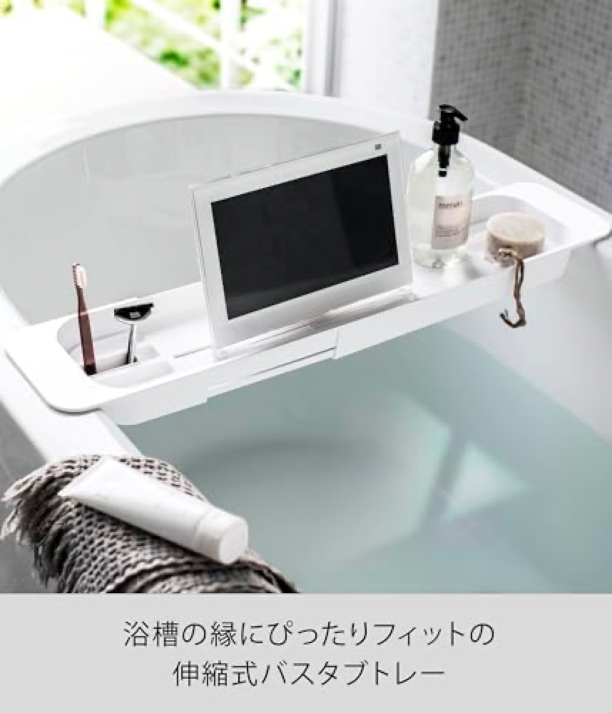
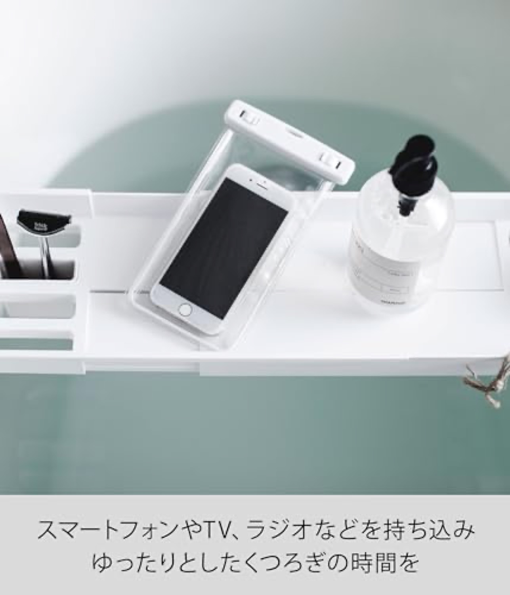
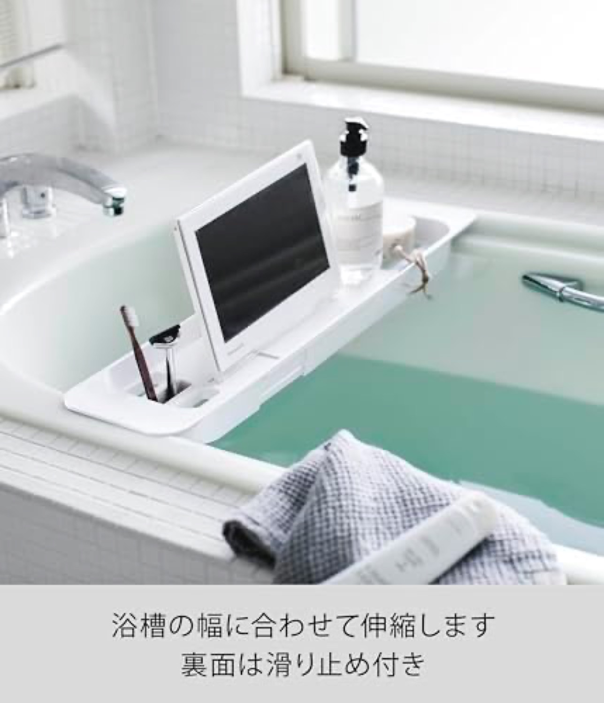
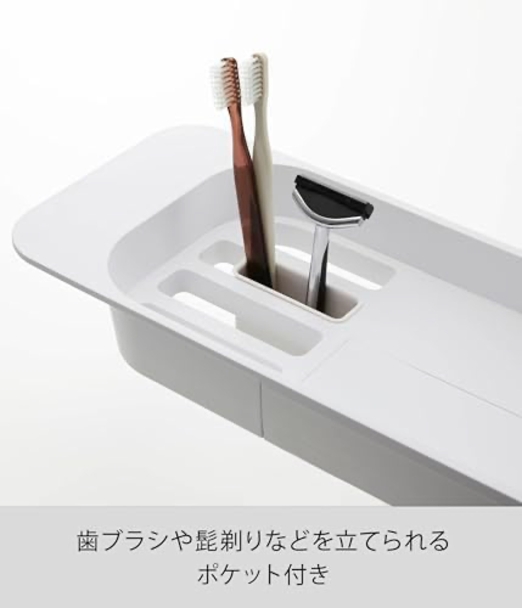
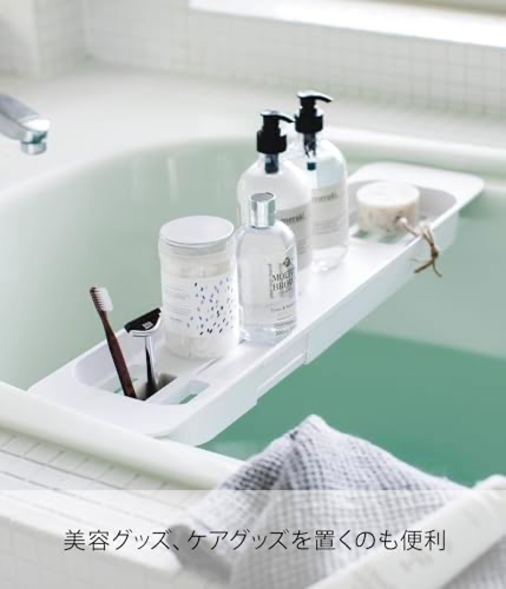
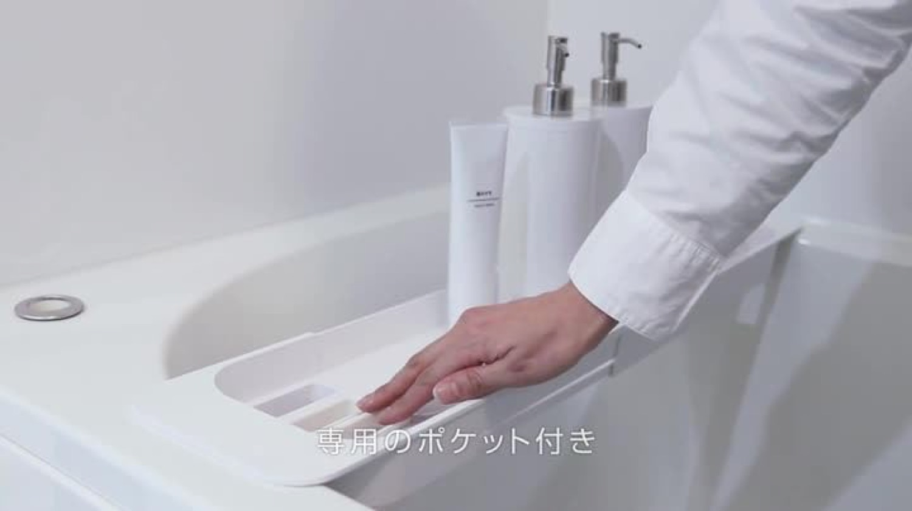

山崎実業's "tower" line is the trusted Japanese homeware brand, sold by Amazon itself, 4.2★ across 464 reviews. Steel avoids mold, but it is cold, utilitarian, and narrow (57.5-75cm).山崎実業「tower」は信頼の国内ブランド。Amazon自身が販売、4.2★・464件。スチールはカビを回避するが、無機質で幅も狭い（57.5-75cm）。







Verdict: clean and trusted, but minimal. Seven tidy images and a Brand Store, sold directly by Amazon. No video, and the steel-and-ABS deck carries no warmth or material story.評価：整理され信頼もあるが最小限。整った画像7とBrand Store、Amazon直販。動画なし、スチール＋ABSに温かみや素材の物語はない。
Brand trust + minimalism, but no warmth, no video, and a narrow 57.5-75cm range that misses wider tubs.ブランド信頼＋ミニマルだが、温かみも動画もなく、57.5-75cmと狭く広い浴槽に届かない。
Sold by Amazon with a Brand Store; the 山崎実業 / tower name carries strong domestic recognition, so it relies more on organic trust than heavy Sponsored spend.Amazon販売＋Brand Store。山崎実業/towerの名が国内で強く、大量出稿よりオーガニックな信頼に依存。
A recognized brand name converts on trust alone. We have no legacy name, so we substitute a sharp claim (防カビ) and Brand Store credibility.認知ブランドは信頼だけで売れる。我々に老舗名はないので、鋭い訴求（防カビ）とBrand Storeの信頼で代替。
Steady mid-tier velocity: faster than premium wood, slower than the cheap clear leaders. Sold by Amazon directly.安定の中位速度：premium木より速く、安い透明勢より遅い。Amazon直販。
Source: Keepa PRO, 2026-06-18.出典：Keepa PRO 2026-06-18。
~21% in 1-3★ · solid for steel, helped by brand trust and no mold issue.1〜3★は約21%。スチールとして堅実、ブランド信頼とカビ無しが効く。
For steel trays the documented category complaints are rust at thin-coated edges over ~a year and a cold, utilitarian feel (see the review study, dossier §4). The narrow 57.5-75cm range also draws fit complaints on wider tubs.スチールトレーの記録された不満は、約1年で薄塗り縁の錆び、無機質な質感（レビュー調査、досье §4）。57.5-75cmの狭さも広い浴槽で適合不満を招く。